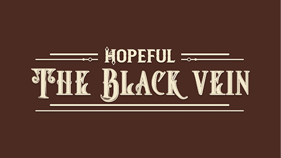

Projects
Carrot Crusader • 2D • Godot • GDScript • 2025
A fast-paced arcade shooter where you play as a chicken with a bow, defending your land from evil farmers! Built in Godot, inspired by endless wave survival games with a quirky and cute twist.
Play on Itch.io View on GitHubHopeful: The Black Vein • 2D • Unity • C# • 2023
A 2D puzzle-platformer set in a steampunk-inspired world. You play as a devoted brother trying to cure his ill sister by infiltrating secret labs, solving puzzles, and uncovering the mystery of the Black Vein disease.
Play on Itch.ioCapingVenture • 3D • Unity • C# • 2022
A 3D adventure puzzle game that follows Taka on his quest to fulfill his grandfather's final wish: find the legendary Golden Caping. Explore a mysterious island, solve puzzles, and unlock ancient secrets.
Play on Itch.io